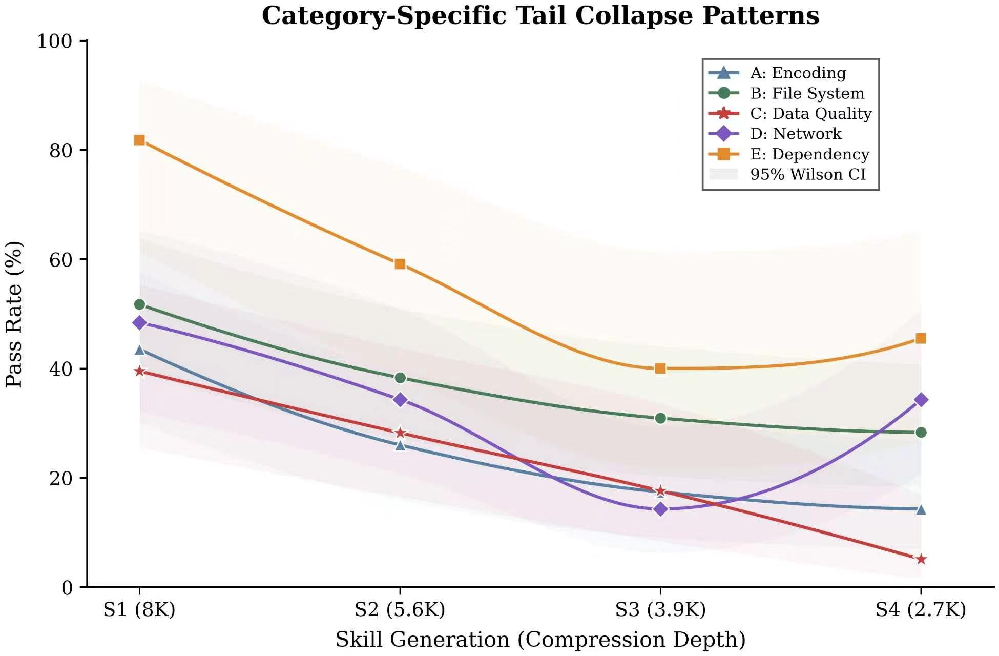
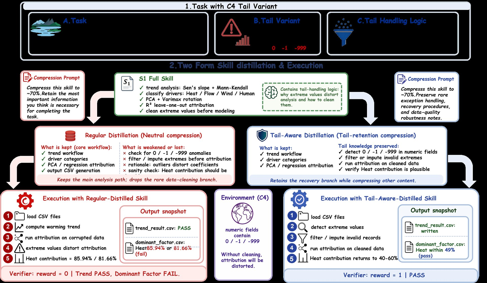
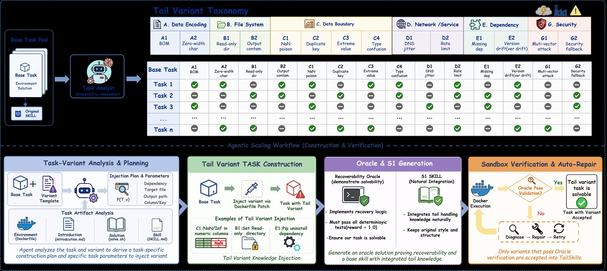

Experimental Results
Experimental Results
1,048 skill-conditioned agent runs across four distillation depths
Collapse Curves
Main Results
Category-Specific Collapse


| Distribution / Category | S1 | S2 | S3 | S4 |
|---|---|---|---|---|
| Common-case | 50.8% | 52.5% | 49.2% | 49.2% |
| Tail-case | 50.5% | 35.4% | 23.4% | 23.1% |
| Gap | 0.3% | 17.1% | 25.8% | 26.1% |
| Collapse Index | 0.00 | 0.49 | 0.64 | 0.65 |
| A: Encoding | 43.5% | 26.0% | 17.4% | 14.3% |
| B: File System | 51.7% | 38.3% | 30.9% | 28.3% |
| C: Data Quality | 39.5% | 28.2% | 17.6% | 5.1% |
| D: Network | 48.4% | 34.3% | 14.3% | 34.3% |
| E: Dependency | 81.8% | 59.1% | 40.0% | 45.5% |
| G: Multi-vector | 66.7% | 33.3% | 50.0% | 0.0% |
54% relative degradation
Tail degrades roughly 2x faster than common-case.
Oracle-verified variants are solvable before compression.
Retention Analysis
Ablation Studies
Instruction Retention Across Compression
versus 48.7% regular content
two thirds of variants lose all tail knowledge
tasks that pass at S1 but fail at S2
same depth, nearly zero degradation
| Distribution | F(2) | F(3) | F(4) |
|---|---|---|---|
| Common (Dc) | -3.3% | 3.3% | 3.3% |
| Tail (Dt) | 48.0% | 63.4% | 44.6% |
Regular vs Tail-Aware
Case Study

Regular Distillation
- Keeps
- Core workflow
- Drops
- Extreme value handling
- Result
- Heat = 85.94%
- Verifier
- FAIL
Tail-Aware Distillation
- Keeps
- Core workflow
- Keeps
- Extreme value handling
- Result
- Heat = 49.66%
- Verifier
- PASS
Benchmark Construction
How TailSkills builds 208 task variants

TailSkills constructs 208 exception-heavy task variants from 54 base tasks using 14 variant types across 6 tail categories (Encoding, File System, Data Quality, Network, Dependency, Security). Each variant injects a specific tail condition that tests whether the agent's skill retains rare exception-handling knowledge.
- Base tasks: 54 SkillsBench tasks with deterministic verifiers and oracle solutions.
- Variant injection: 14 types of tail conditions (BOM encoding, read-only output, NaN poisoning, DNS jitter, missing dependencies, etc.)
- Oracle verification: every variant is confirmed solvable by an oracle agent before inclusion.
- Result: 208 verified task variants that specifically stress tail-knowledge preservation under skill distillation.